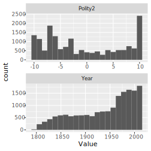
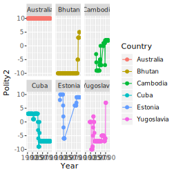

Chapter 8 Are diets more diverse in more democratic countries?
8.1 About this case study
This case study is primarily meant to supplement the material in the book Insights from Data by Petchey, Beckerman, Childs, and Cooper. If you don’t understand something in the case study, have a look at that book (perhaps again), or search for help, or get in touch with us.
8.2 Introduction to the study and data
In this case study we will look at the diversity of food available to people living in countries around the world. And we will explore one potential influence of this diversity—the political system (e.g. democratic) of the country. Why this? Why not? There are likely lots of factors governing the diversity of food available to the population of a country, and political system is just one. We could also look at gross domestic product, location, population size, and so on. But let’s keep things relatively simple and straightforward for the moment. You can make things more complex if you choose to look further into the question, and it may be essential to do so. Just wait until after you’ve mastered the simpler though perhaps still challenging material in this case study.
To be clear, we are asking the question of whether the diversity of food available to the population of a country is associated with the political system of that country. We hypothesise that more freedom will result in more diversity of food availability (figure XXa – illustrate the hypothesis). We will restrict ourselves to two variables: diversity of food available and political system. Let’s use a measure diversity known as the Shannon index, which is greater if there are more food types and if the amount of each is more evenly distributed among them (figure XXb – illustrate shannon in 2x2). As far as we know, the analyses are novel. Any insights will be new! Though, since the findings are not published / peer reviewed, they should be treated as preliminary and (as usual) be critically assessed.
The data about what food is available to the people of a country is from the FAO Food balance data and that about the political system is from the Polity™ IV Project dataset. Hence there will be something fundamentally new in this case study: importing two different datasets and then merging them together.
As you work through this chapter, try following along with the workflow/checklist on this web page.
8.3 A little preparation
Make a new folder for this case study, and in it a folder called in data (this will contain any datasets for this case study/project). In RStudio create an RStudio project and save it in the project folder (not the data folder). Close RStudio and double click on the project file to re-open RStudio. Create a new R script file. In this new script file make a comment about what it will contains, and then load all the libraries we so far used. Then save the file and give it a filename that is intuitive, unique, and memorable, so it is easy to search for and find.
Install the vegan and ggbeeswarm library if you have not already done so, otherwise library(vegan) and library(ggbeeswarm) will not work. Look at the Packages section of the Getting Acquainted chapter if you need help with installation.
8.4 Polity data: origins, acquire, import, clean, tidy, NAs, duplicates
8.4.1 Data origins and acquisition
A Polity is a political entity. The Polity™ IV Project aimed to code the characteristics of states in the world for the purposes of comparative quantitative analysis (i.e. what we’re about to do!). The project and resulting datasets are used for monitoring regime change and for studying effects of regime authority. Nevertheless, the data “should be treated and interpreted with due caution. Its primary utility is in investigative research which should be augmented by more detailed analysis.”; quoted from page 16 of the Dataset User’s Manual by Monty G. Marshall, Ted Robert Gurr, and Keith Jaggers. Find out more about the project at the Center for Systemic Peace website.
You can acquire the complete dataset from this web page of the Center for Systemic Peace. Scroll down to the section Polity IV: Regime Authority Characteristics and Transitions Datasets and click on the Excel Series link to the right of the Polity IV Annual Time-Series, 1800-2017 box. The downloaded file is an Excel spreadsheet. We recommend you open this in Excel and save it as a csv file, but we’ll also show below how to read the Excel file into R.
Looking at the dataset in Excel or something similar, you will see that the dataset has 17’061 observations and 36 variables. We will work with only three of the variables:
- country - a character variable containing the country name.
- year - a numeric variable containing the year.
- polity2 - a numeric variable giving the revised combined polity score from +10 (strongly democratic) to -10 (strongly autocratic).
The revised combined polity score, according to the Dataset User’s Manual is a score varying from -10 for the most autocratic of polities, up to +10 for the most democratic, that “provides a convenient avenue for examining general regime effects in analyses”. (The manual also states a number of reasons for treating the variable with caution.)
8.4.2 Data import
If you did the preparation mentioned above, made a project, made a csv file from the Excel file, and put the data file in the data folder of that project, and you started R by double clicking on the RProject file (or switching to this project), the following code should import the data:
rm(list = ls())
pol <- read_csv("data/p4v2015.csv")## Parsed with column specification:
## cols(
## .default = col_double(),
## scode = col_character(),
## country = col_character()
## )## See spec(...) for full column specifications.If you want to read direct from the Excel file, use this:
pol <- readxl::read_excel("data/p4v2015.xls")Is RStudio showing the correct number of rows and columns? Is it showing the appropriate variable types for each of the three variables? The Country variable should be a character variable, the other two should be numeric).
8.4.3 Tidy and clean
We only want to work with three of the 36 variables, so we use the select function to keep only these, and that the same time rename them to standardise the variable names by making them all begin with an upper case letter and then have lower case:
pol <- pol %>%
select(Country = country, Year = year, Polity2 = polity2)Because we assign the result of this operation to pol we are getting rid of the previous version of pol with this new one.
The data set has only one observation (of Polity) per row, so it is already tidy… we do not need to gather observations from multiple columns into one.
8.4.4 Deal with NAs
As usual, we should see if there are any NAs in the data, understand what they might result from, and decide what how to treat them. The next code makes a new dataset pol_nas that contains the rows that contain a missing value in any of the three variables.
pol_nas <- pol %>%
filter_all(any_vars(is.na(.))) This dataset contains 235 rows, and viewing it we see that it is only the polity2 variables that contains NAs. I.e. there are 235 missing Polity2 values.
A brief perusal of the Dataset User’s Manual reveals a clue about why some of all of these NAs exist: “Cases of foreign “interruption” are treated as “system missing.”
Let us decide to treat these missing values as unimportant for further analyses, and to not include them in any further analyses, by removing them from the dataset. We know this should leave us with 17,061 - 235 = 16,826 rows of data:
pol <- na.omit(pol)You should see that we do, indeed, now have 16,826 rows of data.
We might now like to clean up a little, by removing the pol_nas dataset from R (you will see it dissapear from the Environment pane):
rm(pol_nas)8.4.5 Deal with innapropriate duplicates
We expect there to not exist any more than one Polity score per country per year. We check this by first selecting only the Country and Year variables, then getting any duplicate rows with the duplicated function. The duplicated function returns a vector of TRUE and FALSE, where TRUE means a row is a duplicate. We can then get the sum of this vector to count the number of TRUEs (i.e. number of duplicated rows).
pol %>%
select(Country, Year) %>%
duplicated() %>%
sum()## [1] 2Interesting. There are two cases that contain duplicates. Let’s see which Country-Year combinations these are:
pol %>%
select(Country, Year) %>%
filter(duplicated(.))## # A tibble: 2 x 2
## Country Year
## <chr> <dbl>
## 1 Ethiopia 1993
## 2 Yugoslavia 1991And look at the duplicated cases:
pol %>%
filter(Country == "Yugoslavia", Year == 1991)## # A tibble: 2 x 3
## Country Year Polity2
## <chr> <dbl> <dbl>
## 1 Yugoslavia 1991 -5
## 2 Yugoslavia 1991 -5pol %>%
filter(Country == "Ethiopia", Year == 1993)## # A tibble: 2 x 3
## Country Year Polity2
## <chr> <dbl> <dbl>
## 1 Ethiopia 1993 0
## 2 Ethiopia 1993 1Looking through the Dataset User’s Manual does not readily shed light on these duplicates. Let’s remove both cases of duplication by taking the average Polity2 score. This should result in a dataset with 16,824 rows.
pol <- pol %>%
group_by(Country, Year) %>%
summarise(Polity2 = mean(Polity2)) %>%
ungroup(pol)We just made a decision about how to deal with the duplicated scores for Ethiopia in 1993. We took the mean. There are other things we could have done (e.g. use a different measure of central tendency, such as the median). So we have made an arbitrary choice in our analysis pathway. We went down one path when we could have chosen another. We need to 1) recognise and record when we make decisions like this, and 2) check to see if our conclusions are robust to variation in what we choose to do. (Here, conclusions would not be affected by using the median, as there are only two values being averaged.)
Let us again check for duplicate Country-Year combinations:
pol %>%
select(Country, Year) %>%
duplicated() %>%
sum()## [1] 0Good, there are now no duplicated cases.
8.4.6 Check ranges of numeric variables
Its a good idea to check if numeric variables contain any weird values. From the Dataset User’s Manual we expect the Year variable to be values including the 19th, 20th, and 21st centuries, and the Polity2 variable to have a minimum of -10 and maximum of 10. Write code to check these are true in the imported data.
pol %>%
summarise(min_year = min(Year),
max_year = max(Year),
min_pol = min(Polity2),
max_pol = max(Polity2))## # A tibble: 1 x 4
## min_year max_year min_pol max_pol
## <dbl> <dbl> <dbl> <dbl>
## 1 1800 2015 -10 108.5 First insights from the polity data
Before we move on to the FAO dataset, lets have quick look at some features of the Polity data.
Let’s look at the frequency distributions of the two numeric variables. We will do this efficiently by first gathering the information in the two variables into one, then plotting. This is the method used and described in detail in the Insights book.
pol %>%
gather(key = Variable, value = Value, 2:3) %>%
ggplot(aes(x = Value)) +
geom_histogram(bins = 21) +
facet_wrap( ~ Variable, scales = "free", nrow = 2)
The Polity2 variable is numeric with a minimum values of -10 and a maximum of 10 (as we already knew). The most common polity score is very democratic (+10), there are relatively few moderately democratic polity score, and there are a number of several levels of autocratic polity scores. That is, the distribution appears somewhat bimodial. We must be aware, that these are distributions of each score, with many scores for each country.
The Year variable is distributed with more values in the later years than earlier years—it makes some sense that we have more information about the recent than about the distant past. None of the three variables have any missing values, so we expect to see no warnings about excluded data points, and to not have to deal with any other issues caused by missing values. Great!
Try to write code to find out each of these:
- Number of countries in the dataset.
- Number of years in the dataset, and first year, and last year.
- How many records (years of data) for each country.
- First and last year of data for each country.
- Whether there are gaps (years without data) in each country.
- Number of countries with gaps.
- Number of countries with records in each year.
- Temporal change in polity in some countries that interest you.
- Graphs to visualise these where appropriate.
Number of countries, years, first year and last year:
pol %>%
summarise(num_countries = length(unique(Country)),
num_years = length(unique(Year)),
first_year = min(Year),
last_year = max(Year))## # A tibble: 1 x 4
## num_countries num_years first_year last_year
## <int> <int> <dbl> <dbl>
## 1 193 216 1800 2015For each country, number of years of records, first year, last year, number of years between first and last, and if there are gaps of no data:
per_country_pol <- pol %>%
group_by(Country) %>%
summarise(num_years = length(unique(Year)),
first_year = min(Year),
last_year = max(Year),
years_interval = last_year - first_year +1,
gaps = num_years != years_interval)Number of countries with gappy information:
per_country_pol %>%
summarise(sum(gaps))## # A tibble: 1 x 1
## `sum(gaps)`
## <int>
## 1 46A graph of the number of countries with records in each year:
Change in polity in some countries of interest (to the authors at least):
countries_of_interest <- c("Bhutan", "Brasil", "Cuba", "Cambodia",
"Estonia", "Yugoslavia", "Australia")
pol %>%
filter(Country %in% countries_of_interest) %>%
ggplot(aes(x=Year, y=Polity2, col=Country)) +
facet_wrap(~ Country) +
geom_point() +
geom_line()
Insight That the polity score of a country can change so greatly has implications for our subsequent analyses. For example, calculating and using a mean polity score for each country (average across years) may be unwise as it would ignore such temporal change.
8.6 Acquire, import, check the FAO Food balance sheet data
This data shows, for various Areas in the world, such as countries and continents, the annual supply and use of various food Items such as “Wheat and products”, “Honey”, and “Crustaceans”. Supply and use includes what are called Elements of the food supply equation; elements such as “Production”, Import Quantity“, and”Food supply quantity (kg/capita/yr)". The words Area, Item, and Element are emphasised because they are variables in the dataset, as described further below. There is a lot of important information about this data available on the FAO Food Balance Sheet Metadata web page web page. And even more in the Food Balance Sheet Methodology Handbook.
The full dataset is about 210MB and can be downloaded from the FAO web page. Importing this takes about 4 seconds on a reasonably fast laptop. As you will see below, we will make a smaller dataset (about 15MB) and save it, so we don’t have to work with the full dataset.
The full dataset has 238,560 rows and 113 variables. The first nine variables are:
- Area.code - A numeric variable containing number codes for the Area variable.
- Area - A character variable containing the geographic area that a row is about, for example, a country name or a continent name.
- Item.code - A numeric variable containing number codes for the food items in the Item variable.
- Item - A character variable containing the food item a row is about.
- Element.code - A numeric variable contains number codes for the Element variable.
- Element - A character variable showing the particular supply or utlilisation element a row is about. These are the elements of the food balance equation.
- Unit - The units of measure of the quantity in the row.
- Y1961 - A numeric variable giving the quantity in year 1961
- Y1961F - A character variable giving information about the data (F is for Flag), such as “Official data”, “FAO data”, etc.
The Definitions and standard button on this web page http://www.fao.org/faostat/en/#data/FBS/metadata leads to much much more information about the variables and entries.
You could get the FAO food balance data from the FAO website. The datafile you would get is called FoodBalanceSheets_E_All_Data.csv and is 206MB, i.e. it is quite big. We need, however, only a small amount of the information in this dataset. So to make things easier for ourselves and for you, we created a smaller dataset containing only the data we need, and saved it as an Rdata file. This file type fits more data into a smaller space—the resulting file FoodBalanceSheets_E_All_Data_reduced.Rdata is 1.9MB. We put this smaller data file on the Insights Website, so if you don’t want to make it yourself, please get it from there.
If you do want to go through this process, feel free to use the code immediately below, otherwise skip over this. It’s pretty straightforward, apart from two things. First, we give the read_csv an argument you didn’t previously see: encoding. This helps read_csv properly recognise otherwise problematic symbols. In this case, it ensure that country names such as Côte d’Ivoire don’t cause problems (the ô can do so). Second, the penultimate line saves the produced tibble ff to a Rdata type of data file; though even that new type of instruction should be quite transparent to you by now.
## Get the full food balance sheet dataset *All data* from the FAO website:
## http://www.fao.org/faostat/en/#data/FBS/metadata.
## Reduce the size of the FAO data, so easier to deal with
## import FAO data
ff <- read_csv("data/FoodBalanceSheets_E_All_Data.csv",
locale = locale(encoding = 'ISO-8859-1'))
## First fix some variable names:
names(ff) <- str_replace_all(names(ff), c(" " = "_"))
## Remove all non-countries
ff <- filter(ff, Country_Code < 5000)
## keep only some of the elements
ff <- filter(ff, Element %in% c("Food supply quantity (kg/capita/yr)"))
## remove some other variables that won't be used
ff <- select(ff, -Country_Code, -Item_Code,
-Element_Code, -Element, -Unit,
-ends_with("F"))
## save the reduced file
saveRDS(ff, "data/FoodBalanceSheets_E_All_Data_reduced.Rdata")
rm(ff)The next line reads in that smaller dataset:
#rm(list = ls())
fbs <- readRDS("data/FoodBalanceSheets_E_All_Data_reduced.Rdata")Feel free to have a look at the whole dataset with the skim function. We select a few columns first, as otherwise the output is rather long due to there being 112 variables in the dataset.
#select(fbs, Country, Item, Y1961, Y1971, Y1981, Y1991, Y2001, Y2011) %>%
# skim()There are 17’953 observations/rows in the tibble. There are 182 countries, so 11 fewer than in the Polity data. We will later check which ones are not in the Polity data, and if any in the Polity data are not in the FAO data. There are 114 food Items… wow, that’s a lot of different types of food! Take a look at some of the values… it’s quite interesting to see what’s recorded. Both the Country variable and the Item variable are characters type variables as expected. If the data contained every possible combination of country and item we would expect 182 * 114 = 20’748 observations. That there are only 17’953 tells us that some combinations are missing. We will find out which these are.
The six year variables are, as expected numeric—they are amounts of food available (food supply quantities in kg per capita per year). We see there are quite a lot of missing values in the earlier years, and fewer in the later years. This might be expected if development of methods and adoption of them becomes more complete through time.
8.6.1 Tidy the FAO data
The FAO data is not tidy. You should be able to figure out in what respect it is “dirty”. Yes, the same information is spread across multiple columns/variables, such that there are multiple observations in each row. More specifically, the data for each year is in a separate column—data for different years are spread across columns—each row contains lots of observations each from a different year.
Before we make the data tidy, let’s try to figure out how many rows it should have when tidy. We will gather all the information that is currently spread across columns and put it in one column. A visualisation of a simplified version of the dataset is in Figure 8.1. The answer is the amount of information that’s in the columns that we want to gather into a single column. In the untidy/wide data there are 55 variables containing the data we wish to gather (because we are not gathering the information from Country or Item). Each of those variables has 17,953 rows, so we expect the long/tidy data to have 55 * 17,953 = 987,415 rows.

FIGURE 8.1: The same data (a) in long/tidy format and (b) in wide format, with colours and arrows linking the same data in the two different formats.
Let’s now make the data tidy, and clean up the year variable. We first gather all the same data from columns three through 57 (3:57) into a new variable called Food_Supply_Quantity and put the information about which year each observation belongs to in a new variable called Year. Because the column names begin with Y (e.g. Y1961) we then need to keep only the 2nd through to 5th character in the Year variable (using the substr function), and convert the result to a numeric type variable (with the as.numeric function), doing all this within a mutate in order to replace the old year variable with the converted one. Let’s then take a look at the data with skim. Here’s the code for all that:
fbs_long <- fbs %>%
gather(key = Year, value = Food_Supply_Quantity, 3:57) %>%
mutate(Year = as.numeric(substr(Year, 2, 5)))
#skim(fbs_long)We see that as expected the new tibble contains 987,415. Excellent! This near-magical gather function has done a lot of very tedious work for us, very quickly. There are still the same number of countries (182) and food items (114). Now we see that the data covers from year 1961 to 2015. We also get the distribution of the food supply quantity variable… it looks to have lots of small values, and a few large. Is this what you would expect? Perhaps supply is large for a few basic foods (e.g. grains) and then there are lots of relatively rare food items. But beware that at present we are looking at the distribution including data from across years and countries. We will soon look more closely at this distribution. The skim also tells us that only the food supply quantity variable contains any missing values, and that there are 158,307 of them.
8.6.2 Clean the FAO data
Are all the years represented in the dataset? Let’s look at the unique values of the year variable:
unique(pull(fbs_long, Year))## [1] 1961 1962 1963 1964 1965 1966 1967 1968 1969 1970
## [11] 1971 1972 1973 1974 1975 1976 1977 1978 1979 1980
## [21] 1981 1982 1983 1984 1985 1986 1987 1988 1989 1990
## [31] 1991 1992 1993 1994 1995 1996 1997 1998 1999 2000
## [41] 2001 2002 2003 2004 2005 2006 2007 2008 2009 2010
## [51] 2011 2012 2013 2014 2015Yes, every year from 1961 to 2015 is represented (by at least one observation). There are 15 years in the dataset.
Another good check to do on a dataset is for duplicated rows, if one can reasonably conclude that there should be none. Do we think there can be any duplicated rows in this dataset? That would be the exactly the same value of Country, Item, Year, and Food Supply Quantity.
Finding any duplicated rows is fairly straightforward thanks to the duplicated function, which returns a TRUE or FALSE for each row of a dataset, TRUE if the row is duplicated somewhere, or FALSE otherwise. Then we can filter the rows by these TRUE/FALSE values to give only the duplicated rows:
duplicated_records <- filter(fbs_long, duplicated(fbs_long))Note that the resulting tibble contains only one example of each duplicate (look at the data with View(duplicated_rows).
There are, in fact, 9,287 rows that are duplicated (not unique). Let’s assume that these are mistaken duplicate entries, and so reduce to a dataset with only unique rows:
fbs_long <- unique(fbs_long)Now, if we’re being really paranoid, we might wonder if there were ever two different values of food supply recorded for the same country in the same year. Put another way, if we look at only the Country, Year, and Item variables, do we see duplicated rows?
part_duplicated_records <- fbs_long %>%
select(Country, Item, Year) %>%
duplicated() %>%
filter(fbs_long, .)Looking at the result we see there are 10,733 rows with duplicated Country, Year, and Item. This is weird. And that these duplicates are only for food items “Eggs” and “Milk - Excluding Butter”. We have no idea why there are multiple entries for these two items! Here’s an example of one of the duplicates:
filter(fbs_long,
Country == "Albania",
Item == "Eggs",
Year == 1961)## # A tibble: 2 x 4
## Country Item Year Food_Supply_Quantity
## <chr> <chr> <dbl> <dbl>
## 1 Albania Eggs 1961 1.5
## 2 Albania Eggs 1961 1.8In the same year for the same country there are two values of Food_Supply_Quantity: 1.5 and 1.8. But it’s quite reasonable to think there can be only one. Let’s solve this problem by rather arbitrarily calculating one value, the average, of these duplicated records:
fbs_long <- fbs_long %>%
group_by(Country, Year, Item) %>%
summarise(Food_Supply_Quantity = mean(Food_Supply_Quantity)) %>%
ungroup(fbs_long)Time to tell the truth. It took us a long long time to realise there were duplicated records in the FAO dataset. We did not pro-actively think to check for duplicates. We only realised there must be duplicates when we tried to get the numbers to add up below. They did not before we removed the duplicates, and this led us to find the duplicates. Once we found them, we removed them above. Now it looks like we were really smart to think they might occur, check for them, find them, and remove them. In reality we were not so smart. What we were, however, was **absolutely determined* to understand why the numbers did not add up. You must also be as strict in your work. After we found the duplicates in this dataset, we also looked in the Polity data, found some, and then decided to add a check for duplicates to all case studies, and to advise you to make this a standard sanity check when you start looking at a dataset.
That was a major step forward. Now we know our dataset has only unique observations.
Now let’s do another sanity check. Because there are 182 countries and 114 food items we know there could be 20,748 observations for each year. Let’s see how many there really are:
obs_per_year <- fbs_long %>%
group_by(Year) %>%
summarise(num = n())There are only 17,589 observation per year. Either not all countries reported in all years, not all items were reported by each country in each year, or both!
First let’s see how many countries there are per year:
countries_per_year <- fbs_long %>%
group_by(Year) %>%
summarise(num = length(unique(Country)))There are indeed 182 countries per year. All countries are included in all years.
Let’s see how many Items each country reported (across all years):
items_per_country <- fbs_long %>%
group_by(Country) %>%
summarise(num = length(unique(Item)))Aha. Not all items were reported by all countries. Turkmenistan reported on the fewest (62), while China reported on the most (110). Let’s see if the sum of the number of items reported by each country is the number of observations per year.
sum(pull(items_per_country, num))## [1] 17589Yes! This is the same as the number of observations per year. All this pretty much guarantees that each country consistently (across all years) reported on a constant set of the items, or there is an observation for this set of items in each year.
We didn’t just now find out anything new about the data, but we did confirm that we understand it properly. Checks and balances increase confidence.
Now let’s look at the missing values:
#skim(fbs_long)We still have 155,003 missing values. Why? Where are they coming from?
Let’s dig a bit deeper by getting the number of observations per year, and the number and proportion of these that are missing values:
obs_per_year <- fbs_long %>%
group_by(Year) %>%
summarise(num = n(),
num_na = sum(is.na(Food_Supply_Quantity)),
prop_na = num_na / num)And take a look at the data using View(obs_per_year). We can also see quite a bit if we plot the summary data (8.1) with the following code:

FIGURE 8.2: The number of observations, the number of missing values and the proportion of missing values in each year of the data.
We see that from 1961 to 1989 there are 2,592 (14.74%) missing values per year. In 1990 and 1991 there are 2,493 (14.17%) missing values per year. From 1992 to 2011 less than 5% of the values are missing, and from 2012 to 2015 (the last year in the dataset) most or all the values are missing. Can you think of why there might be fewer missing values after 1991? Let’s look at one country (its identity might give you a clue)… Belarus. Let’s get the number of values, missing values, and proportion of missing values for Belarus in each year.
Belarus_obs_per_year <- fbs_long %>%
filter(Country == "Belarus") %>%
group_by(Year) %>%
summarise(num = n(),
num_na = sum(is.na(Food_Supply_Quantity)),
prop_na = num_na / num)Looking at this dataset we see that all values are missing until 1992, and then there are no missing values until 2012, when all are again missing. it’s probably clear by now that all values are missing until 1992 because Belarus only became an independent state in 1991. Likely there are lots of other countries in the dataset that have missing values for this reason.
There’s some other weird stuff going on here: Belgium and Luxembourg did not separately report data during the period 1992-1999, and instead reported jointly. Then from 2000 until 2011 reported separately, so there we have lots of missing values. Then we have some countries that ceased to exist in their former state, e.g. Czechoslovakia after 1993 contains only missing values due to its dissolution into the Czech Republic and Slovakia. Similarly, USSR reports only missing values after 1991 when the USSR collapsed.
And why more missing values from 2012 to 2015? Actually, the description of the data on the FAO web site says the data is from 1961 to only 2013, so it’s not surprising that 2014 and 2015 are empty. We will remove these years. We don’t know why there are more missing values in 2012 and 2013, so let’s also remove those:
fbs_long <- filter(fbs_long, Year < 2012)
#skim(fbs_long)What are we going to do??? This seems very messy! Let’s aim for a dataset that contains only country/year combinations where a country actually existed (i.e. there were not all NAs reported), and also where there is an entry for all 114 food items for each country year combination (by putting zeros in for no reported item).
First we get a list of years in which each country does not contain all missing values. This we will use as a master list of years and countries to include in our analysis. We will not include year/country combinations where there were only missing values (the reason we need to be this specific is that we will soon turn the missing values into zeros). Let’s get that list of country/year combinations to include:
country_year_not_all_missing <- fbs_long %>%
group_by(Country, Year) %>%
summarise(keep = n() != sum(is.na(Food_Supply_Quantity))) %>%
filter(keep) %>%
select(-keep) %>%
ungroup()Does that look rather complicated? The difficult(ish) line is the summarise, in which we create a new variable keep that is TRUE or FALSE depending if all values of Food_Supply_Quantity are NA or not. The n() give the number of values, the sum(is.na(Food_Supply_Quantity)) gives the number of NAs, and the != asks if the two are not the same, and returns TRUE if so. The other lines should be possible for you to work out (though not necessarily easy).
Note that there are 8,272 combinations of years and countries in the dataset. This is an important number. It is the number of data points we should have data for after we calculate the diversity of food available in each country in each year.
Now we must decide what to assume when a country did not report a value for an item. We will assume that this means there was always zero supply of that food item, so the country did not bother ever including it, i.e. it’s really a zero. Hence we’re going to pad out the data so that all countries report on all 114 items, with zero Food Supply Quantity for the items they did not report.
First we make a dataset the all combinations of Country, Year, and Item. It should have 182 * 51 * 182 = 1,058,148 rows. We use the quite lovely expand.grid function, which creates all possible combinations of the variables it’s given. We give it all the unique values of Country, Year, and Item, and it expands them to give all possible combinations. Each argument to expand.grid should be a name-value pair, and the name should be the same in the original data, to aid further operations:
all_cases <- expand.grid(Country = unique(pull(fbs_long, Country)),
Year = unique(pull(fbs_long, Year)),
Item = unique(pull(fbs_long, Item))) Super. This has 1,058,148 rows as expected. Now we want to only keep from this the country/year combinations for which we already found there were countries that existed. There are 8,272 of these and each should have 114 items, so we should get 943,008 observations. We do this with a left_join to keep only the cases of the join that have values in the first (left) dataset in the join:
temp2 <- left_join(country_year_not_all_missing, all_cases)## Joining, by = c("Country", "Year")## Warning: Column `Country` joining character vector and
## factor, coercing into character vectorWe get a warning, and know that we should never ignore warnings. The warning is Column Country joining character vector and factor, coercing into character vector. This is caused because expand.grid automatically converts character variables to factors. We can stop this happening (by adding the argument stringsAsFactors = FALSE in our call to expand.grid and hopefully the remove the warning:
all_cases <- expand.grid(Country = unique(pull(fbs_long, Country)),
Year = unique(pull(fbs_long, Year)),
Item = unique(pull(fbs_long, Item)),
stringsAsFactors = FALSE)
temp2 <- left_join(country_year_not_all_missing, all_cases)## Joining, by = c("Country", "Year")Perfect… and we have the expected number of 943,008 observations.
Next we do another left join to add the food supply quantity data (in fbs_long) to the cases/observations we want to keep (in temp2)
temp3 <- left_join(temp2, fbs_long)## Joining, by = c("Country", "Year", "Item")Good, we still have 943’008 observations.
#skim(temp3)The number of missing values is now 139,252. Each of these is a case when a country reported values for some items in a year, but did not report values for others, and these others are given a value of NA. As we said above, we’re going to assume these are real zeros, and so we need to turn them all into zeros:
fao_final <- temp3 %>%
mutate(Food_Supply_Quantity = ifelse(!is.na(Food_Supply_Quantity),
Food_Supply_Quantity,
0))
#skim(fao_final)No missing values now. And we have a dataset that we very well understand. Let’s check again though.
We should have 114 items reported per country per year:
items_per_country_per_year <- fao_final %>%
group_by(Country, Year) %>%
summarise(num = length(unique(Item)))And we should have varying numbers of countries per year:
countries_per_year <- fao_final %>%
group_by(Year) %>%
summarise(num = length(unique(Country)))And the sum of the number of countries per year multiplied by 114 should equal 943,008:
sum(pull(countries_per_year, num)) * 114## [1] 943008Yes! Wow! Can you believe so much effort was needed to make a solid foundation of data! And we’re not even there yet… we still have wrangling work to do: we need to merge/join the FAO and the Polity datasets. But first…
8.6.3 Calculating our response variables
The final step of preparation of the FAO data is to calculate our response variables. Our question is about food diversity so we need response variables that quantify this. We will use number of items available per year, and diversity of items available per year, where diversity accounts for the amount of each item as well as number of items using the Shannon index.
fao_div <- fao_final %>%
group_by(Country, Year) %>%
summarise(diversity = diversity(Food_Supply_Quantity,
index = "shannon"),
richness = sum(Food_Supply_Quantity>0)) %>%
ungroup(fao_div)Excellent. We have 8,272 data points, exactly as we should. (We previously saw this was the number of combinations of country and year for which not all data was NA. I.e. the number of rows in country_year_not_all_missing).
8.7 Merge the two datasets
The final step of data preparation is to merge the Polity and FAO data. One nasty issue we must deal with before we do the merge is to check the country names in the two datasets. It’s quite possible, even likely, there are instances of the same country having different names in the two. The following code gets the country names from each, looks for ones that appear in one and not the other, and vice versa, and writes these to csv files.
pol_countries <- unique(pull(pol, Country))
fao_countries <- unique(pull(fao_div, Country))
in_pol <- setdiff(pol_countries, fao_countries)
in_fao <- setdiff(fao_countries, pol_countries)
write_csv(tibble(in_pol), "data/in_pol.csv")
write_csv(tibble(in_fao), "data/in_fao.csv")Then it’s a matter of some manual spreadsheet work to find the matches, and to put these in a data file, and bring that matching back into R. You can get the country matching data file countryname_map.csv from http://insightsfromdata.io.
countryname_map <- read_csv("data/countryname_map.csv",
locale = locale(encoding = 'ISO-8859-1'))## Parsed with column specification:
## cols(
## in_fao = col_character(),
## in_pol = col_character()
## )Then we use a left_join to match the Country names in the Polity data to the those in the mapping dataset, which in effect adds a variable to the polity data that is the name of the countries in the FAO data. We then replace the Country variable with one that contains the FAO names if they exist, otherwise the Polity name:
pol1 <- left_join(pol, countryname_map, by =c ("Country" = "in_pol")) %>%
mutate(Country = ifelse(is.na(in_fao),
Country,
in_fao)) %>%
select(-in_fao)
#skim(pol1)And let’s check the effect of this renaming of countries on the number of NAs. Here is the merge of the FAO and Polity data on the original Polity country names:
fao_pol <- left_join(fao_div, pol)## Joining, by = c("Country", "Year")sum(is.na(pull(fao_pol, Polity2)))## [1] 2607We get 2,607 missing polity values. And here after the renaming:
dd1 <- left_join(fao_div, pol1)## Joining, by = c("Country", "Year")sum(is.na(pull(dd1, Polity2)))## [1] 1819Now we have 1,819 missing polity values. Fewer, but still quite a lot. These are countries in the FAO data that we couldn’t find in the Polity data. This is a bit unsatisfactory, but we’ll go with what we have. By the way, some of these missing values are despite the country being in the Polity data, e.g. there were no Polity records for Afghanistan from 1979 to 1988, but there were for other years.
One last thing: let’s remove the NAs from the dataset:
fao_pol <- na.omit(fao_pol)8.8 Tidying up
We have a lot of objects in R’s brain. We only need one: fao_pol. We can remove all the other variables. We don’t need to run all the code above every time we do an analysis. In this situation we can save the fao_pol dataset, remove everything from R’s brain using rm(list = ls()) or by clicking the little broom icon in RStudio, and load it again:
saveRDS(fao_pol, "data/fao_pol.Rdata")rm(list = ls())
fao_pol <- readRDS("data/fao_pol.Rdata")8.9 Shapes
As usual we look at the distribution of our variables. First the distribution of number of food items available in each country, across all countries and all years. The code for this you are quite familiar with by now, using ggplot and geom_histogram (Figure 8.3:
ggplot(fao_pol, aes(x = richness)) +
geom_histogram(bins = 10)FIGURE 8.3: Frequency distribution of richness of food items across all countries and years.
Some countries in some years have only between 30 and 40 food items available, others have over 90. This is a large difference. The most common number is around 80. The distribution is somewhat left skewed, with a longer tail of smaller values. The distribution is not, however, horribly asymmetric.
And looking at the distribution of diversity of food item quantities with the following code (Figure 8.4:
ggplot(fao_pol, aes(x = diversity)) +
geom_histogram(bins = 10)FIGURE 8.4: Frequency distribution of diversity of food items across all countries and years.
The diversity distribution is quite similar to the richness distribution, with a bit of left skew, but not too much. The values of diversity are rather arbitrary—not as intuitive as richness. Higher values indicate some combination of high richness and high evenness in the quantities of the items.
And looking at the distribution of the Polity variable with the following code (Figure 8.5:
ggplot(fao_pol, aes(x = Polity2)) +
geom_histogram(bins = 10)FIGURE 8.5: Frequency distribution of Polity2 all countries and years.
Is this what you were expecting? A rather bimodal distribution with most countries either very autocratic (low scores) or very democratic (high scores). Perhaps this in itself is an interesting pattern, though political scientists may find it obvious. Probably the creators of the Polity2 data have commented on it.
8.10 Relationships
First we’ll look at the relationship between richness and diversity. We might imagine that they’re quite closely associated since 1) diversity includes richness, and 2) their distributions look quite similar. By now the following code to make a scatter plot of richness against diversity should be familiar, though we add some transparency to the points since lots lie on top of each other (Figure 8.6:
ggplot(fao_pol, aes(x = richness, y = diversity)) +
geom_point(alpha = 0.05)FIGURE 8.6: Relationship between the two response variables, richness of items and diversity of items, across all countries and years.
Not quite as close a relationship as we expected. There is certainly enough spread that we could get different insights from looking at each of the variables separately… they don’t have to tell the same story.
And now, drum-roll, for the answer to our question. Is there a relationship between the political system of a country and the richness of food available for human consumption. Again, by now the R-code is hopefully no challenge for you (and gives Figure 8.7):
ggplot(fao_pol, aes(x = Polity2, y = richness)) +
geom_point(alpha = 0.05)FIGURE 8.7: Richness of food items available versus Polity score, across all countries and all available years.
What do you think? Is there a relationship? And how confident are you that the relationship is not just the result of chance? Before we conclude, let’s look at the relationship for diversity of food items (Figure 8.8).
ggplot(fao_pol, aes(x = Polity2, y = diversity)) +
geom_point(alpha = 0.05)FIGURE 8.8: Diversit of food items available versus Polity score, across all countries and all available years.
Well, to our eyes, it certainly looks like the countries with high Polity scores have higher richness and diversity of food available than the countries with low Polity scores. There is also a lot of variation, such that any country (regardless of Polity) can have nearly the highest or lowest observed diversity of richness.
We are being a little bit naughty, however. Each country can be contributing multiple data points to these graphs, one for each year it is present in the dataset. Countries with more years will tend to influence our conclusions more than those with fewer years. And the different years of data from one country are not independent… they are repeated measures. Let’s remove this non-independence and differential contributions of different countries in one of the crudest (though very simple and effective) ways—by getting the average value for each country. The group_by, summarise we use should be familiar:
dd_year <- fao_pol %>%
group_by(Country) %>%
summarise(Polity2 = mean(Polity2),
richness = mean(richness),
diversity = mean(diversity))We have gone from a dataset with 5,665 observations to one with 133, one data point for each country in the data. Here’s the code for the graphs of Polity score and richness/diversity for this country level data:
ggplot(dd_year, aes(x = Polity2, y = richness)) +
geom_point()FIGURE 8.9: Richness of food items available versus Polity score; average value for each country.
ggplot(dd_year, aes(x = Polity2, y = diversity)) +
geom_point()FIGURE 8.10: Diversity of food items available versus Polity score; average value for each country.
The country level data (Figures 8.9 and 8.10) appear to show stronger evidence of a positive relationship between polity score and richness/diversity of food available, with more democratic countries (higher polity scores) having more diversity of food available than less democratic ones.
Let’s look at the data another way, by categorising the Polity score. To do this we make a new variable using mutate and use the cut function to cut the Polity scores into five categories, and we name the categories:
dd_year <- dd_year %>%
mutate(Polity2_cat = cut(Polity2,
breaks = seq(-11, 11, length = 6),
labels = c("Very autocratic",
"Quite autocratic",
"Neutral",
"Quite democratic",
"Very democratic")))Here, we will only show the figure for the richness of food items (Figures 8.9) and not diversity (you can make that graph yourself):
ggplot(dd_year, aes(x = Polity2_cat, y = richness)) +
geom_boxplot() + geom_beeswarm() +
ylab("Dietary richness\n[number of food items]") +
xlab("Type of political system") +
coord_flip()FIGURE 8.11: Frequency distribution of diversity of food items across all countries and years.
This tells more or less the same story, though the figure might be considered a bit nicer as it shows the meaning of the Polity score. There is an interest pattern we didn’t note before, however: that the very autocratic countries seems to have somewhat higher food diversity than we might expect—quite similar to the countries with Neutral polities. There are relatively few of these very autocratic countries, however, and one of them (China) has the highest food richness of any country!
8.11 Wrapping up
Did you notice that we spent about 20 pages preparing the data, and then only ten or so (mostly graphs) looking at shapes and relationships? We spent much more time and effort making sure we knew the data inside out, that we had prepared it appropriately, and it was a solid foundation for the question we wanted to answer. And that most of the new practices and R code you experience were in that data preparation phase, and not in the analysis part.
That said, we were rather shallow in the analysis part. There is much much more we could have looked at. For example, we could look at relationships within countries across time, especially if there is a big shift in polity. Does the shift in polity precede a shift in diversity of food availability?
There are also lots of other explanatory variables we could have included in our analysis, for example national GDP, geographical location, and so on. Lots of this data is freely available on the internet. A simply fantastic place to get lost in such data and visualisation is the Our World in Data website.
Other things you could think about analysing, for which data are available (though we couldn’t say exactly where):
- Biodiversity
- Latitudinal gradient
- Species (country) area relationship
- GDP diversity relationship.
- Causality by time lag relationships.
- FAO Macroeconomic statistics (e.g. GDP by country by year) (http://www.fao.org/faostat/en/#data)
- FAO Population data (e.g. population size by country by year) (http://www.fao.org/faostat/en/#data)
- World Bank, e.g. country land area https://data.worldbank.org/indicator/AG.LND.TOTL.K2
- Maybe: SDG indicators: http://data.un.org/Explorer.aspx?d=SDGs
8.12 Some questions
Go to the Insights companion website http://insightsfromdata.io and have a go at the questions and exercises for this chapter.